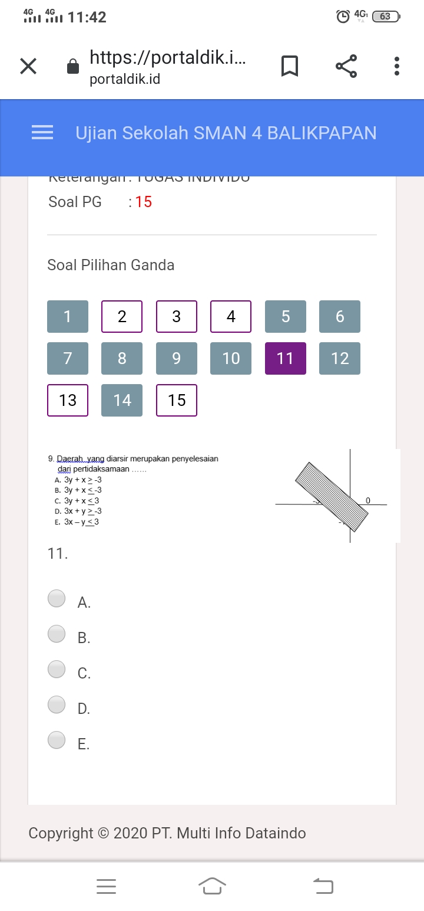

Kali ini aku akan bercerita tentang masa sekolah ku. Tepatnya saat Aku duduk di bangku SMA kelas 10. Saat itu Indonesia dilanda pandemi corona. Dua tahun enam bulan aku menjalani sekolah online. Aktivitas terbatas, dan juga mulai adanya peraturan PPKM di kota Balikpapan. Walau begitu, aku tetap semangat untuk sekolah online. Tetap melakukan aktivitas seperti biasa. Bedanya terasa sekali waktu itu. Pukul 06.15 WITA biasanya aku udah berangkat ke sekolah, saat pandemi hanya menyiapkan handphone untuk melakukan zoom meeting kelas. Sebenarnya hal ini menguntungkan untuk siswi seperti ku, karena sekolah ku yang lumayan jauh dari rumah, kira-kira 13 Km dari rumah. Oleh karena itu aku bersyukur sekali, hehe.
Pembelajaran jarak jauh membuatku untuk selalu belajar mandiri. Pasalnya terkadang aku perlu mengulang atau review kembali apa yang sudah disampaikan oleh guruku. Aku perlu mempelajari lagi setelah zoom kelas. Oiya, Fun fact saat kelas online kami tetap melakukan tugas praktikum loh. Aku ingat banget praktikum fisika yang dilakukan secara online dengan pengumpulan laporan melalui portaldik, sistem pembelajaran jarak jauh yang digunakan sekolah ku saat itu. Aku suka banget dengan praktikum sains. Makanya aku excited banget saat melakukannya.
Yah, sudah tidak asing lagi bukan untuk tugas video saat pandemi. Saat itu banyak bermunculan video tugas yang viral di sosmed. Sekolahku pun sama. Memberikan tugas video sebagai bukti dokumentasi pembelajaran kami selama kelas online. Aku ingat, kami diberikan tugas video Oleh guru sejarah Indonesia. Video bertema Pembelajaran jarak jauh saat Pandemi corona dibuat dengan satu kelas. Gak kebayang waktu itu grup kelas ribut membahas konsep yang sesuai dengan tema tersebut. Ketua kelas mulai membagi peran tiap siswa/i saat take video. Saat itu aku mendapatkan peran siswi yang membacakan puisi tentang pandemi. Aku dan beberapa teman yang lain bersama membacakan puisi secara bergantian. Ada pula yang berperan memakai handsanitizer secara bergantian dengan editan transisi seolah-olah saling berbagi sanitizer. Adapula yang saling berbagi masker dan yang terakhir bernyanyi bersama yang diiringi alunan musik yang dimainkan oleh anak laki-lakinya.
Jika saudara/i yang membaca tertarik menonton video kami, dibawah ini link tautan dokumentasi video kami yang dipublikasikan oleh guru sejarah indonesia. Video kami merupakan video terbaik loh seangkatan. Makanya di publikasikan di channel youtube guru kami.